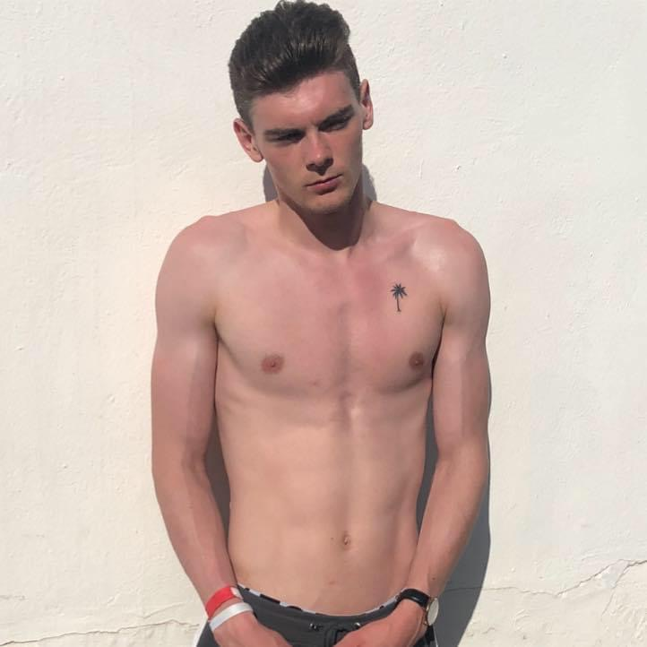
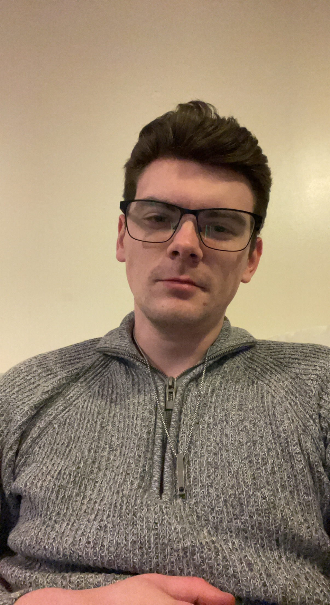

In 2014, Dec left school a man. Those years to these brings us to where we are now.

In 2014, Dec left school a man. Those years to these brings us to where we are now.

After finishing school, I started Hadlow College, doing a sport course. Halfway through college, I became a dad. Only 18 years old I was too. Devon was born on 6th December 2015, and with his arrival, the next chapter of life really began.

My first job was at Wetherspoons. I quit after 2 weeks. Then I worked at B&Q. I got fired after 10 months. Then I worked at Parenta Training. I got fired after 10 months. The I worked at the hospital. I managed to hold this job diown for long.

I met Anna on Tinder in August 2021. In many ways, what was meant to eb a one night stand went very wrong. So wrong that we actually live together now. She's a teacher. Makes a decent stepmum for Devon though innit.
Thank you for coming to me webpage, my very first (outside of that incredibly visually unappealing recipes one). I've decided that, to give it a bit of flavour, and something tangible to aim to build, it will be a very basic autobiographical site. It's essentially a brief imagining of my life in 3 stages, from youth, throughthe development years, into where I am now. Enjoy the journey of me.
With thanks,
Dec
Hold it right there!
Have you subscribed to the newsletter yet? No? No worries, this button here will fix that!